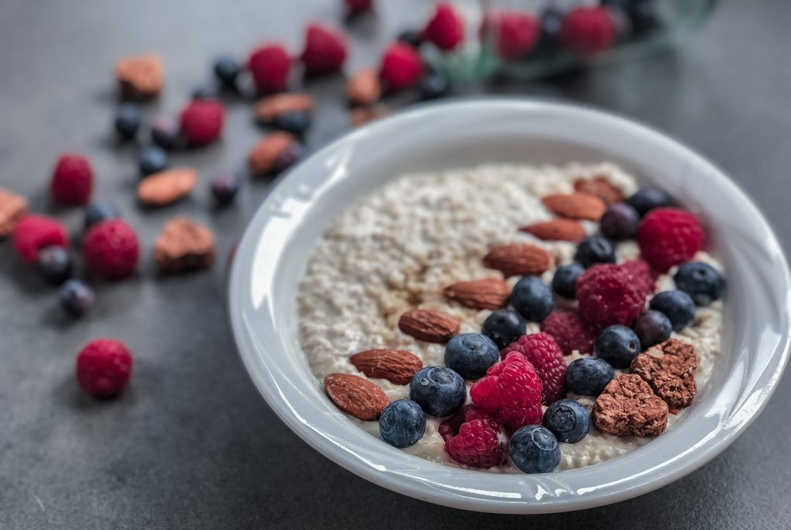

Vegan Oatmeal

Description
A recipe for an overnight vegan oatmeal made with plant-based milk and chia seeds.
Optionally decorated with fresh fruits and nuts.
Ingredients
- a banana
- oatmeal (3 tbsp.)
- chia seeds (2 tbsp.)
- plant-based milk (1 glass)
- optionally: fruits and nuts
How it's made
- Mash banana into a container that you can store overnight in the fridge
- Add your oatmeal and chia seeds
- Fill the container with your milk of choice
- Store overnigth in a closed container
- Add your fruits and nuts the next day just before eating
- Enjoy :)